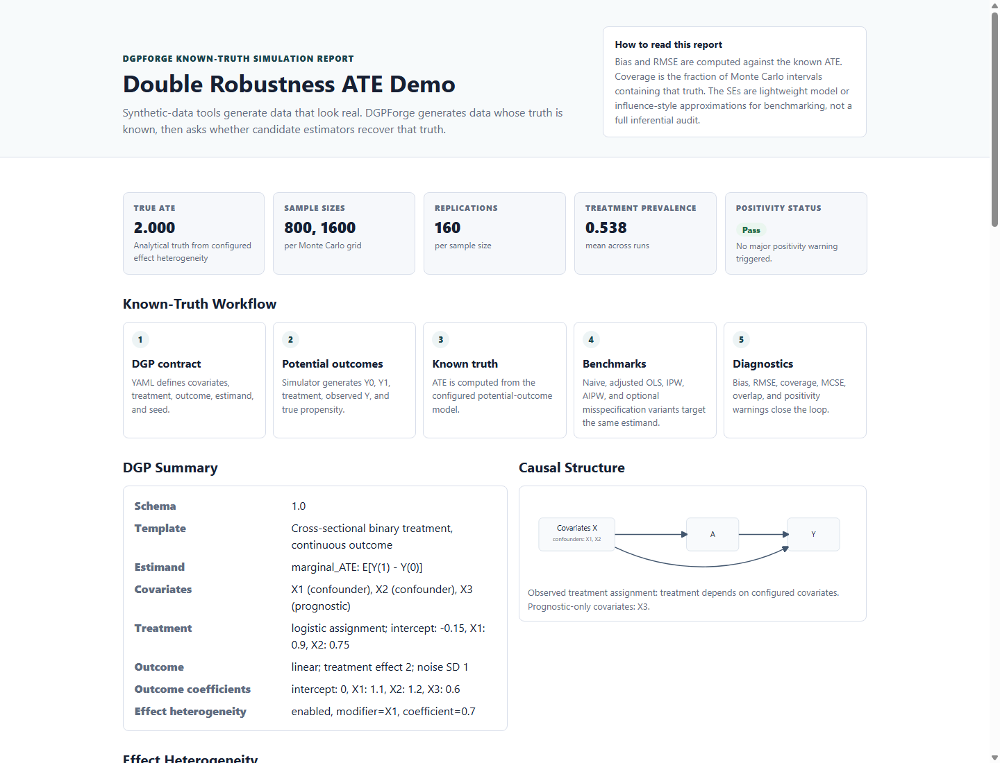

Hero demo
LLM draft → causal DGP contract
Natural-language study design becomes a validated causal DGP contract, assumptions log, known-truth run, and deterministic report.
Open reportDGPForge Award C demo gallery
Known-truth causal DGP simulation for estimator stress-testing.
Specify a causal DGP, generate potential outcomes, compute the known causal estimand, and benchmark estimators against that truth.
Four compact entry points cover causal contract drafting, observed confounding, rate estimands, and observed-data complications.
Hero demo
Natural-language study design becomes a validated causal DGP contract, assumptions log, known-truth run, and deterministic report.
Open reportHero demo
Treatment depends on prognostic covariates, so naive estimation is biased while adjusted and AIPW estimators move toward the marginal ATE.
Open reportHero demo
Event counts with exposure denominators show marginal rate differences, rate ratios, and honest uncertainty availability.
Open reportHero demo
Configured MCAR, MAR, or MNAR mechanisms preserve known full-data truth while comparing complete-case and missingness-IPW behavior.
Open reportAdditional seeded causal DGP contracts exercise randomized treatment, weak overlap, heterogeneous effects, calibration, sensitivity, clustering, and double robustness.
Treatment is independent of covariates.
Naive difference should be approximately unbiased.
Open reportTreatment assignment is strongly separated by covariates.
Positivity warning should trigger; IPW may become unstable.
Open reportTreatment effect varies with binary modifier X2.
True marginal ATE averages the configured individual effects.
Open reportAIPW variants deliberately misspecify one or both nuisance models.
One-correct variants should be closer to truth than the double-misspecified variant in this seeded DGP.
Open reportOne base contract expands across sample sizes, confounding strengths, and effect patterns.
Grid summary compares finite Monte Carlo evidence across DGP cells.
Open reportLogistic binary-outcome DGP with marginal risk-difference benchmarking.
Reports marginal risks, risk difference, risk ratio, and the conditional-vs-marginal distinction.
Open reportLatent U affects treatment and outcome but is hidden from observed estimators.
Bias surfaces show how hidden-confounding strength changes estimator bias under known truth.
Open reportContinuous outcomes nested in clusters with a configured ICC.
Shows why cluster-aware SEs matter for coverage when observations are clustered.
Open reportDesign targets are converted into calibrated DGP parameters.
Reports requested vs achieved target moments under the configured synthetic DGP.
Open reportCurated simulation-section extraction creates a contract and assumptions log.
Parser demonstrates provenance; it is not general paper reproduction.
Open reportThe optional LLM layer drafts or reviews causal DGP contracts, but deterministic validation gates execution and records assumptions.
Mock paper extraction writes a draft contract, assumptions log, extraction trace, and deterministic report.
draft_dgp.yaml, extraction_trace.md, unresolved_questions.md, validation_report.md, and report.html
Open reportExisting YAML receives deterministic checks plus mock LLM organization of review findings.
review_report.md, deterministic_checks.json, deterministic_checks.md, and suggested_questions.md
Open artifact
Pass or warning refers to positivity diagnostics only. Numeric results are finite Monte Carlo evidence under the seeded scenarios.
| Scenario | Known target | Positivity | Expected behavior | Report |
|---|---|---|---|---|
| Randomized Treatment | 2.000 | Pass | Naive difference should be approximately unbiased. | report.html |
| Observed Confounding | 2.000 | Pass | Naive estimator is biased; adjusted/AIPW should be closer to truth. | report.html |
| Weak Overlap | 2.000 | Warning | Positivity warning should trigger; IPW may become unstable. | report.html |
| Heterogeneous Effect | 2.200 | Pass | True marginal ATE averages the configured individual effects. | report.html |
| Double Robustness | 2.000 | Pass | One-correct variants should be closer to truth than the double-misspecified variant in this seeded DGP. | report.html |
| Scenario Grid | varies by cell | Warning | Grid summary compares finite Monte Carlo evidence across DGP cells. | report.html |
| Binary Outcome | 0.169 | Pass | Reports marginal risks, risk difference, risk ratio, and the conditional-vs-marginal distinction. | report.html |
| Unmeasured Confounding Sensitivity | varies by U grid | Warning | Bias surfaces show how hidden-confounding strength changes estimator bias under known truth. | report.html |
| Count/Rate Outcome | 0.002 | Pass | Simulates public-health event counts with exposure denominators and known rate estimands. | report.html |
| Missing Data Mechanisms | 1.200 | Pass | Compares complete-case and missingness-IPW analyses under an explicit observed-data mechanism. | report.html |
| Clustered ICC | 1.500 | Pass | Shows why cluster-aware SEs matter for coverage when observations are clustered. | report.html |
| DGP Calibration | target checks | Pass | Reports requested vs achieved target moments under the configured synthetic DGP. | report.html |
| From-Text Demo | 2.000 | Pass | Parser demonstrates provenance; it is not general paper reproduction. | report.html |
Run python scripts/build_demo.py, then python scripts/verify_demo.py --check. Public static gallery URL: https://pickbranchz.github.io/DGPForge-STAI-X-Award-C/